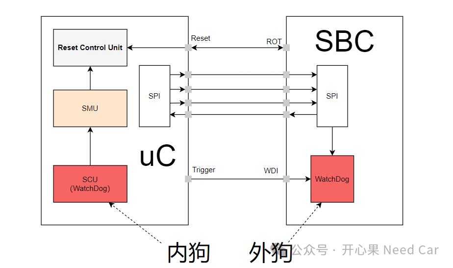
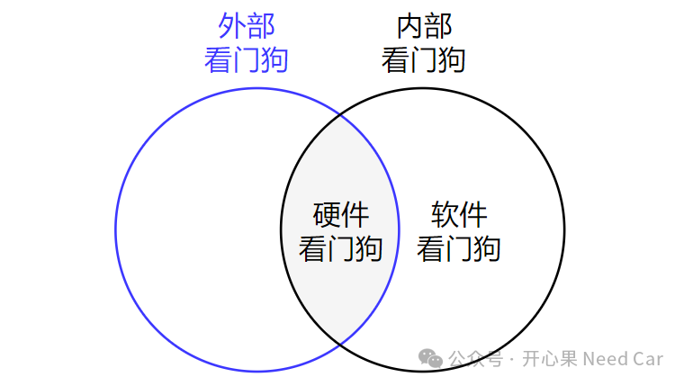
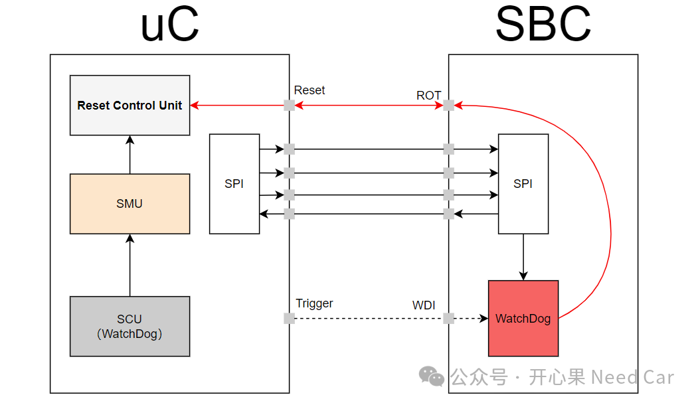

开心果 Need Car · 2024-02-23T12:54:00+08:00 · 微信原文
汽车嵌入式开发中，对于看门狗(Watchdog)，我们并不陌生。用好了，可以给我们"看家护院"（即：提高软件鲁棒性）；用不好，那可就是一个软件界的"二哈"，可了劲地"拆家"，工程师就得不断"补窟窿"（即：修bug）。本文，聊一聊看门狗的一些议题。
Q1：为什么需要看门狗？
A1：假设这样一种场景：软件运行偶发异常，卡死在某个while(1)的循环语句处。如果不进行干预，那么，软件程序将无法继续执行，控制器将无法工作。遇到这样的工程场景，如果有一定的干预（eg：Reset系统），重新运行程序，是不是可以避免这种偶发的错误呢？答：是的。所以，在嵌入式系统中，为了提高软件运行的稳定性和可靠性，引入了看门狗。
Q2：看门狗分类


Q3：看门狗的本质？
A3：不管何种类型的看门狗，本质上都是一个定时器（Timer）。在一定的时间内没有"喂狗"（重置Timer），Timer就会溢出，当Timer溢出以后，执行用户自定义的一些异常处理动作，eg：重置系统（Reset System）。
Q4：软件看门狗定时器分类
A4：看门狗使用的定时器可以是软件定时器，也可以是硬件定时器。软件定时器可以设置多个，资源限制小，缺点：容易受到系统负载影响，精度不高；硬件定时器受资源限制，但是硬件定时器精度高，响应及时，不受系统负载影响。
Q5：外部看门狗为什么要采用中断触发呢？
Q6：内部软件看门狗（Software Watchdog）所在任务优先级应该高还是低？
A6：内部软件看门狗（Software Watchdog）所在任务优先级应该设置的相对高一些。这是因为看门狗的主要作用是监控软件系统的运行状态，如果看门狗的任务优先级太低，那么它可能会被其他任务阻塞（eg：While(1)卡死），导致看门狗无法及时发现系统故障（eg：无法设置异常条件，不能触发系统复位），从而影响系统的稳定性和可靠性。
Q7：软件升级过程中的喂狗处理
A7：这里主要是考虑软件升级过程中，如何"喂"外部硬件看门狗。一般来说，工程上常见的外部硬件看门狗触发原理如下：

往期精彩回顾
以太网基础：为什么需要ICMP？
信息安全：安全启动的信任链如何建立？